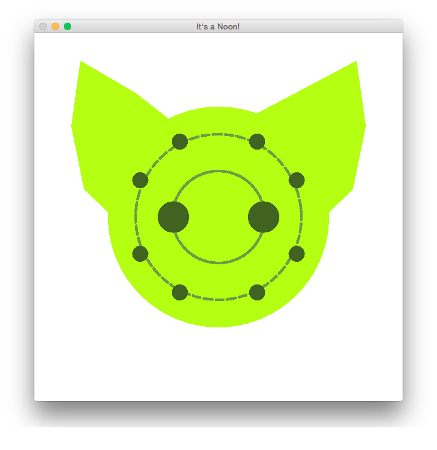

I drew my fursona using OpenGL. The backstory is probably longer than the source code.

Back when I was 12 and on deviantArt, fursonas were all the rage. Of course, because I was Beyond All That, a friend and I designed mine quite literally off my web alias, Neon.
Because of an unfortunate typo people now call me Noon, which is also the name of this green Bohr model of the Neon atom with cat ears.
Noon's body was generated iterating across the sine/cosine formula for a circle since OpenGL doesn't like circles. Their electrons come from placing points and smoothing them. Everything else was guess-and-check vertex placement.